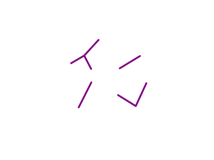

Heterogenes \(k\)-CVRP
basierend auf dem Paper „Capacitated Vehicle Routing with Non-Uniform Speeds“ (2010)
von Inge Li Gørtz, Marco Molinaro, Viswanath Nagarajan und R. Ravi
von Inge Li Gørtz, Marco Molinaro, Viswanath Nagarajan und R. Ravi
Lukas Graf
Seminar: Spieltheorie und Approximationsalgorithmen
Metrisches TSP
Vollst. Graph \(G=(V,E)\) mit
metr. Abstandsfkt. \(d: E \to \mathbb{R}_{\geq 0}\)
metr. Abstandsfkt. \(d: E \to \mathbb{R}_{\geq 0}\)
und Startpunkt/Depot \(s \in V\)
Tour \(\tau\) durch ganz \(V\)
Minimiere \(d(\tau)\)
(Metrisches) CVRP

TSP + Kapazität \(Q \in \mathbb{N}_0\) (pol. groß)
Bedarf \(q_v \in \{0, \dots, Q\}\) zu \(v \in V\)
Route \(\sigma\), die alle Bedarfe erfüllt und max. \(Q\) Einheiten auf einmal transp.
Minimiere \(d(\sigma)\)
Heterogenes \(k\)-TSP
TSP + \(k\) Fahrzeuge mit
Geschw. \(2^{\lambda_i}\) (oBdA \(\lambda_i \in \mathbb{N}_0\))\(\mu_l := \left\{i\mid \lambda_i = l\right\}\)
Geschw. \(2^{\lambda_i}\) (oBdA \(\lambda_i \in \mathbb{N}_0\))\(\mu_l := \left\{i\mid \lambda_i = l\right\}\)
Touren \((\tau_i)\), bei \(s\) beginnend, die zusammen ganz \(V\) abdecken
Minimiere \(\max d(\tau_i)/2^{\lambda_i}\)
HetTSP \(\cup\) CVRP

Routen \(\sigma_i\), die gemeinsam alle Bedarfe erfüllt und jeweils max. \(Q\) Einheiten auf einmal transportiert
Minimiere \(\max d(\sigma_i)/2^{\lambda_i}\)
\(\exists \rho\)-approx. Alg. (z.B. Christofides)

Tour-Splitting
\(\OPT_\CVRP \geq \frac{2}{Q}\sum_{v\in V} q_v \cdot d(s,v)\)
\(\exists (\rho+2)\)-approx. Algorithmus
\(\exists \mathcal{O}(1)\)-approx. Algorithmus
Blackbox
\(\exists \mathcal{O}(1)\)-approx. Algorithmus
Algorithmus für HetTSP
(1)
Rate \(M\) mit \(\OPT \leq M \leq 2\cdot\OPT\)
(2)
\(\left(H_l\right)_{l\geq 0} \gets\) LevelPrim(\(G, d, M\)):
(3)
\(\left(\Tc_l\right)_{l\geq 0} \gets\) Decomposition(\(\left(H_l\right)_{l\geq 0} \)):
(4)
\(\left(\tau_i\right)_{i=1}^k \gets\) Assignment(\( \left(\Tc_l\right)_{l\geq 0} \)):
(a)
\(\left(x_{Ti}\right) \gets\) FractionalAssignment(\( \left(\Tc_l\right) \))
(b)
\(\left(\tau_i\right) \gets\) RoundingAssignment(\( \left(x_{Ti}\right) \))
(a)
\(V_0 := \left\lbrace v\in V \mid d(s,v) \leq M\right\rbrace, V_l := \left\lbrace v \in V \mid 2^{l-1}M \lt d(s,v) \leq 2^l M\right\rbrace\)
(b)
for \(l\geq 0\) do \(H_l \gets\) Minimaler Spannbaum auf \(G\left[V_{\leq l}\right]/V_{\lt l}\)

(c)
return \(\left(H_l\right)_{l\geq 0}\)
\(\left(H_l\right)_{l\geq 0}\) erfüllt (falls \(M\) korrekt geraten):
- Knoten-Level entlang Wurzel-Blatt-Pfaden sind monoton wachsend.
- Für alle \(l\geq -1\) gilt \(\sum_{j>l} d(H_j) \leq 8M\cdot \sum_{j\geq l}2^j\mu_j\)
(a)
\(\Sc_0 := \left\lbrace H_0 \right\rbrace,\quad \Sc_l :=\) Zerl. von \(\Hc\cap (V_l\times V_{\leq l})\) in Bäume
mit genau einer Kante nach \(V_{\lt l}\)
mit genau einer Kante nach \(V_{\lt l}\)
(b)
\(\Sc_l^{\geq} := \left\{\tau \in \Sc_l \mid d(\tau) \geq 2^{l-3}M\right\}, \Sc_l^\lt := \Sc_l \backslash \Sc_l^{\geq}\)
(c)
for \(\tau \in \Sc_l^\lt\) do \(h(\tau) := \tau' \in S_{l-1}^{\geq}\) mit \(\tau \cup \tau'\) zsh. (ex. eind.)
(d)
for \(\tau \in \Sc_l^{\geq}\) do
(e) \(\Tc_l(\tau) \gets\) Part. \(\tau \cup h^{-1}(\tau)\) in Bäume d. Länge \(\left[2^{l+1}M, 2^{l+2}M\right]\)
(und evtl. ein kürzerer)
(f) \(\Tc'_l(\tau) \gets \left\{T_r \cup \{\right.\)kürzeste Kante zu \(\left.s\} \mid T_r \in \Tc_l(\tau)\right\}\)
(e) \(\Tc_l(\tau) \gets\) Part. \(\tau \cup h^{-1}(\tau)\) in Bäume d. Länge \(\left[2^{l+1}M, 2^{l+2}M\right]\)
(und evtl. ein kürzerer)
(f) \(\Tc'_l(\tau) \gets \left\{T_r \cup \{\right.\)kürzeste Kante zu \(\left.s\} \mid T_r \in \Tc_l(\tau)\right\}\)
(g)
return \(\left(\Tc_l := \bigcup_{\tau \in \Sc_l^{\geq}}\Tc'_l(\tau)\right)_{l\geq 0}\)
\( (\Tc_l)_{l\geq 0}\) ist \( (6, 40) \)-zuweisbar.
\( (\Tc_l)_{l\geq -1}\) ist \( (\alpha, \beta) \)-zuweisbar, falls gilt:
- Für alle \(T \in \Tc_l\) gilt: \(d(T) \leq \alpha 2^l M\)
- Für alle \(l \geq 0\) gilt: \(\sum_{j > l} d(\Tc_j) \leq \beta M \sum_{j\geq l} 2^j\mu_j\)
\((x_{Ti})\) ist \(L\)-sättigendes \(b\)-Matching, wenn gilt:
\(\quad\sum_i x_{Ti} = b(T),\quad \sum_T x_{Ti} \leq b(i),\quad x_{Ti}\in\NN\)
\(\quad\sum_i x_{Ti} = b(T),\quad \sum_T x_{Ti} \leq b(i),\quad x_{Ti}\in\NN\)
\(L\)-sättigendes \(b\)-Matching existiert genau dann,
wenn für alle \(K\subseteq L: b(K) \leq b(N(K))\)
\((L\)\(\cup\)\(R\)\(, F, b)\) besitzt ein \(L\)-sättigendes \(b\)-Matching \((x_{Ti})\).
Es kann in Pol.-Zeit gefunden werden (z.B. mit Max-Flow).
Es kann in Pol.-Zeit gefunden werden (z.B. mit Max-Flow).


Zeit, die \(i\) für \(T\) benötigt
\(i\) zugewiesener Anteil von \(T\)
Folgende Rundung von \((\tilde{x}_{Ti})\) zu \((x'_{Ti})\) ist in Pol.-Zeit möglich:
\(\sum_{i\in M_T} \tilde{x}_{Ti} = 1, \quad \quad \tilde{x}_{Ti} \geq 0,\)
\(\sum_{T\in J_i} p_{Ti}\tilde{x}_{Ti} \leq \beta M\)
\(\sum_{T\in J_i} p_{Ti}\tilde{x}_{Ti} \leq \beta M\)
\(\sum_{i\in M_T} x'_{Ti} = 1, \quad \quad \quad x'_{Ti} \in \{0,1\}\)
\(\sum_{T\in J_i} p_{Ti} x'_{Ti} \leq \beta M + 2\alpha M\)
\(\sum_{T\in J_i} p_{Ti} x'_{Ti} \leq \beta M + 2\alpha M\)
wobei \(J_i := \{T \mid p_{Ti} \leq 2\alpha M\}\) und \(M_T := \{i \mid p_{Ti} \leq 2\alpha M\}\)
\( (\Tc_i)_{i\geq 0}\) ist \( (\alpha, \beta) \)-zuweisbar \(\Rightarrow \left(\tau_i\right)\) ist \((4\alpha+2\beta)\)-approximativ
Instanz \(\Ic\) von \(\HetCVRP\)
Instanz \(\Jc\) von \(\HetTSP\) mit
\(\OPT_\HetTSP(\Jc) \in \Oc(1)\cdot\OPT_\HetCVRP(\Ic)\)
\(\OPT_\HetTSP(\Jc) \in \Oc(1)\cdot\OPT_\HetCVRP(\Ic)\)
Reduktion
\(\Oc(1)\)-approx.
Algorithmus
(von ←)
Algorithmus
(von ←)
\((\tau_i)\) Lsg. von \(\HetTSP\)
\((\sigma_i)\) Lsg von \(\HetCVRP\) mit
\(\max \frac{d(\sigma_i)}{\lambda_i} \in \Oc(1)\cdot \max \frac{d(\tau_i)}{\lambda_i}\)
\(\max \frac{d(\sigma_i)}{\lambda_i} \in \Oc(1)\cdot \max \frac{d(\tau_i)}{\lambda_i}\)
Tour-Splitting
(fahrzeugweise)
(fahrzeugweise)
Quellen:
- Capacitated Vehicle Routing with Non-Uniform Speeds (2010) - I.L. Gørtz, M. Molinaro, V. Nagarajan, R. Ravi
- Bounds and Heuristics for Capacitated Routing Problems (1985) - M. Haimovich, A.H.G. Rinnooy Kan
- Combinatorial Optimization (2011) - W.J. Cook, W.H. Cunningham, W.R. Pulleyblank, A. Schrijver
- Approximation algorithms for scheduling unrelated parallel machines (1990) - J.K. Lenstra, D.B. Shmoys, É. Tardos